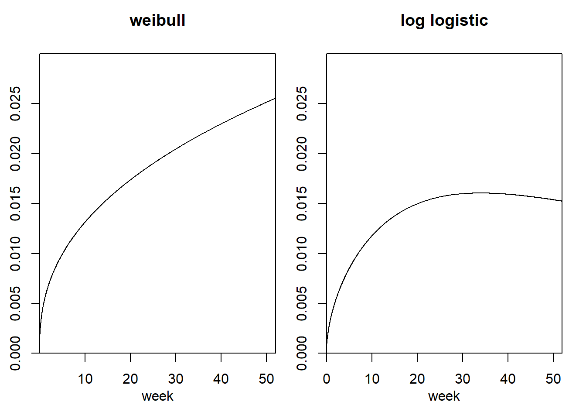

3 連続時間を用いたパラメトリックな手法
前章(2)の離散時間モデルは汎用性が高いが、イベント・ヒストリー分析では連続時間モデルが使われることが多い。本章では、事象が起きた時点が正確に記録されているデータに対して一般的に使われるパラメトリックな手法を解説する。この方法では、推定されるパラメータを除いて、モデルに含まれる値の分布の型がはっきり仮定される。
3.1 連続時間ハザード率
連続時間モデルでは、時点\(t\)で事象を経験する可能性のある個体が、時点\(t\)から\(t+s\)までの間に事象を経験する確率\(P(t,t+s)\)を考える。なお、\(t=1\)のとき、これは離散時間のハザード率と同じになる。
この確率を\(s\)で割り、\(s\)を0に限りなく近づけたときの極限値が連続時間のハザード率になる(式(3.1))。この値は、1より大きな値をとることもあるが負にはならない。
\[ h(t) = \lim_{s \to 0} \frac{P(t,t+s)}{s} \tag{3.1} \]
ハザード関数\(h(t)\)の形によって連続時間のイベント・ヒストリー分析のタイプが分類できる。
3.2 パラメトリックな比例ハザードモデル
3.2.1 モデルの分類
パラメトリックな分析には、「比例ハザードモデル(proportional hazards model)」と「加速時間ハザードモデル(accelerated failure time model)」の2種類があるが、本節では前者について解説する。
比例ハザードモデルは、ハザード関数が時間と独立変数によってどのように規定されるかによって、以下の3つに分類できる。なお、いずれのモデルでもパラメータの推定は最尤法で行う。
3.2.1.1 指数回帰モデル
最もわかりやすい分析は、\(h(t)\)を独立変数の線形関数にすることである(式(3.2))。左辺で\(log\)をとっているのは、線形関数が0より小さくならないようにするためである。\(x_1\)と\(x_2\)は非時間依存の独立変数を、\(b_0\)~\(b_2\)は推定されるパラメータを表す。なかでも\(b_1\)と\(b_2\)は偏回帰係数である。
\[ log(h(t)) = b_0 + b_1x_1 + b_2x_2 \tag{3.2} \]
この式ではハザード関数は時間に依存しない(= 時間に対して一定)。このようなモデルでは通常事象が発生するまでの時間として指数分布5を仮定するので、「指数回帰モデル」といわれる。指数分布の確率密度関数は1つのパラメータ\(\lambda\)を用いて以下のように表せる。ハザード率は一定の値\(\lambda\)で与えられる。
\[ f(t) = \lambda e^{-\lambda t} \;\; (t \geq 0) \tag{3.3} \]
3.2.1.2 ゴンぺルツ回帰モデル
一般的に、ハザード率が時間を通して一定であると仮定するのは現実的でない。例えば生物の死を考えると、老化するほど死亡する確率は増大するはずである。そこで、指数回帰モデルの仮定を緩め、ハザード率の対数(log)が時間と共に直線的に増加/現象すると仮定するモデルを考える(式(3.4))。
\[ log(h(t)) = b_0 + b_1x_1 + b_2x_2 + ct \tag{3.4} \]
このようなモデルでは通常事象が発生するまでの時間としてゴンぺルツ分布6を仮定するので、「ゴンぺルツ回帰モデル」といわれる。ゴンぺルツ分布の確率密度関数は２つのパラメータ\(a\)と\(b\)を用いて以下のように表せる。ハザード率は\(ae^{bt}\)で与えられる。
\[ f(t) = a exp(at - \frac{a}{b}e^{bt} + \frac{a}{b}) \;\;(t \geq 0) \tag{3.5} \]
3.2.1.3 ワイブル回帰モデル
あるいは、ハザード率の対数が時間の対数と共に直線的に増加/減少するモデルを考えることもできる(式(3.6))。
\[ log(h(t)) = b_0 + b_1x_1 + b_2x_2 + clog(t) \tag{3.6} \]
このようなモデルでは通常事象が発生するまでの時間としてワイブル分布7を仮定するので、「ワイブル回帰モデル」といわれる。ワイブル分布の確率密度関数は２つのパラメータ\(a\)と\(b\)を用いて以下のように表せる。ハザード率は\(\frac{a}{b^a} t^{a-1}\)で与えられる。なお、式からわかるように指数分布はワイブル分布で\(a=1\)のときである(\(\lambda = 1/b\))。
\[ f(t) =\frac{a}{b} \biggl(\frac{t}{b}\biggl)^{a-1} exp\biggl(-\biggl(\frac{t}{b}\biggl)^a\biggl) \;\;(t \geq 0) \tag{3.7} \]
3.2.2 注意点
時間と独立変数の間の交互作用がない
\(x_1\)と\(x_2\)の効果(\(b_1\)と\(b_2\))は全ての時点で同じである。ワイブル回帰モデルもゴンぺルツ回帰モデルも時間に対して単調増加/減少である ハザード率と時間の関係がU字型や逆U字型になることはない。これは、実際の分析では使いにくい場合がある。なお、第??でこの制約のないモデルを検討する。
誤差項がない
ただし、実際に事象が発生するまでの時間とモデルで推定される時間には誤差が含まれるので、決定論的なモデルではない。
3.2.3 Rでの実装
3.2.3.1 データの読み込み
まず、分析に用いる第1章で触れた服役囚の再販データを読み込む。このデータでは、432人の元服役囚の内、ランダムに選ばれた半分は経済的支援を受け、残りの半分は対照群として支援を受けなかった。変数の説明は以下の通り。なお、時間依存的な変数は本章では扱わず、次章で扱う。
従属変数にかかわる変数
- week: 出所後の経過週数
- arrest: 再犯の有無
独立変数(非時間依存変数)
- age: 年齢
- race: 黒人か否か(1/0)
- mar: 婚姻の有無(1/0)
- prio: 前科の数
- paro: 仮釈放か否か(1/0)
- wexp: 過去の就業経験の有無(1/0)
- fin: 経済的支援の有無(1/0)
独立変数(時間依存変数)
- work: 週ごとの就業状態
recid <- read_dta("data/recid.dta")
recid %>%
datatable(options = list(scrollX = 100), rownames = FALSE)3.2.3.2 分析の実行
ehaパッケージのphreg関数を用いる。従属変数としては、期間中に事象を経験したかの変数(arrest)と、事象を経験した場合はその時間を、しなかった場合は打ち切りの時間を示す変数(week)を入れる必要がある。
以下のように実行できる。指数分布はワイブル分布で\(a=1\)のときなので、dist = "weibullでshape = 1としてあげればよい。
## 指数回帰モデル
mod_exp <- phreg(Surv(week, arrest) ~ fin + age + race + wexp + mar
+ paro + prio, data = recid, dist = "weibull", shape = 1)
## ゴンぺルツ回帰モデル
mod_gom <- phreg(Surv(week, arrest) ~ fin + age + race + wexp + mar
+ paro + prio, data = recid, dist = "gompertz")
## ワイブル回帰モデル
mod_wei <- phreg(Surv(week, arrest) ~ fin + age + race + wexp + mar
+ paro + prio, data = recid, dist = "weibull")結果は以下の通りである。Coefは偏回帰係数の推定値を、Exp(Coef)は偏回帰係数を指数変換したもの(\(e^{偏回帰係数}\))を、se(Coef)は偏回帰係数の標準誤差を表している。ゴンぺルツモデルとワイブルモデルの結果では、shapeは確率密度関数(式(3.5)と式(3.7))のパラメータ\(a\)の、scale`はパラメータ\(b\)の推定値である。
## 指数回帰モデル
mod_exp## Call:
## phreg(formula = Surv(week, arrest) ~ fin + age + race + wexp +
## mar + paro + prio, data = recid, dist = "weibull", shape = 1)
##
## Covariate W.mean Coef Exp(Coef) se(Coef) Wald p
## fin 0.511 -0.366 0.693 0.191 0.055
## age 24.765 -0.056 0.946 0.022 0.011
## race 0.872 0.305 1.357 0.308 0.322
## wexp 0.596 -0.147 0.864 0.212 0.488
## mar 0.132 -0.427 0.652 0.381 0.263
## paro 0.622 -0.083 0.921 0.196 0.673
## prio 2.841 0.086 1.089 0.028 0.002
##
## log(scale) 4.051 0.586 0.000
##
## Shape is fixed at 1
##
## Events 114
## Total time at risk 19809
## Max. log. likelihood -686.37
## LR test statistic 31.22
## Degrees of freedom 7
## Overall p-value 5.65729e-05## ゴンぺルツ回帰モデル
mod_gom## Call:
## phreg(formula = Surv(week, arrest) ~ fin + age + race + wexp +
## mar + paro + prio, data = recid, dist = "gompertz")
##
## Covariate W.mean Coef Exp(Coef) se(Coef) Wald p
## fin 0.511 -0.381 0.683 0.191 0.046
## age 24.765 -0.057 0.944 0.022 0.009
## race 0.872 0.313 1.367 0.308 0.310
## wexp 0.596 -0.148 0.862 0.212 0.485
## mar 0.132 -0.435 0.648 0.382 0.255
## paro 0.622 -0.082 0.921 0.196 0.674
## prio 2.841 0.092 1.096 0.029 0.001
##
## log(scale) 3.894 0.311 0.000
## log(shape) -0.676 0.816 0.408
##
## Events 114
## Total time at risk 19809
## Max. log. likelihood -681.14
## LR test statistic 33.35
## Degrees of freedom 7
## Overall p-value 2.27754e-05## ワイブル回帰モデル
mod_wei## Call:
## phreg(formula = Surv(week, arrest) ~ fin + age + race + wexp +
## mar + paro + prio, data = recid, dist = "weibull")
##
## Covariate W.mean Coef Exp(Coef) se(Coef) Wald p
## fin 0.511 -0.382 0.682 0.191 0.046
## age 24.765 -0.057 0.944 0.022 0.009
## race 0.872 0.316 1.371 0.308 0.306
## wexp 0.596 -0.150 0.861 0.212 0.481
## mar 0.132 -0.437 0.646 0.382 0.253
## paro 0.622 -0.083 0.921 0.196 0.673
## prio 2.841 0.092 1.097 0.029 0.001
##
## log(scale) 3.990 0.419 0.000
## log(shape) 0.339 0.089 0.000
##
## Events 114
## Total time at risk 19809
## Max. log. likelihood -679.92
## LR test statistic 33.42
## Degrees of freedom 7
## Overall p-value 2.2149e-053つのモデルから推定されたハザード関数を描画したのが図3.1である。定義通り、指数回帰モデルでは時間に依らずハザード率が一定であることが分かる。なお、これらは全ての独立変数を平均値にしたときのものであり、以後本稿で示されるハザード関数はいずれも同様である。
as.ggplot(~plot(mod_exp, xlab = "week", ylab = "hazard rate", main = "exponential model", ylim = c(0,0.03)))+
as.ggplot(~plot(mod_gom, xlab = "week", ylab = "hazard rate", main = "Gompertz model", ylim = c(0,0.03)))+
as.ggplot(~plot(mod_wei, xlab = "week", ylab = "hazard rate", main = "Weibull model", ylim = c(0,0.03)))図3.1: モデルから推定されたハザード関数
なお、推定された生存曲線(= 時間の経過とともに再犯をしていない元服役囚の数がどのように減っていくかを表したもの)は以下のようになる(図3.2)。ハザード関数と同様に、これらは全ての独立変数を平均値にしたときのものである。
as.ggplot(~plot(mod_exp, fn = "sur", xlab = "week", ylab = "survival rate", main = "exponential model"))+
as.ggplot(~plot(mod_gom, fn = "sur", xlab = "week", ylab = "survival rate", main = "Gompertz model"))+
as.ggplot(~plot(mod_wei, fn = "sur", xlab = "week", ylab = "survival rate", main = "Weibull model"))図3.2: モデルから推定された生存曲線
各モデルの偏回帰係数の推定値を比較したものが以下の表である(表3.1)。３つのモデルの推定結果はほとんど変わらない。いずれのモデルでも有意な影響を持っていたのはageとprioであり、finはワイブル回帰モデルのみで有意になった。
偏回帰係数は、ほかの変数の影響を統制したうえでその独立変数が1増加したときにハザード率の対数(式(3.2) ~ 式(3.6)を思い出してほしい)がどの程度増加するかを表している。例えば指数回帰モデルでは、表3.1の偏回帰係数の推定値(Coef(exp))より、他の変数の影響をコントロールしたときに年齢(age)が1歳上がるとハザード率の対数が0.056低下する。より直感的に理解するためには、偏回帰係数を指数変換すればよい(Exp(Coef_exp))。これは、ハザード比と呼ばれ、独立変数が1増加したときにハザード率の比がどの程度変化するかを示している。例えば、経済的援助がある場合(fin = 1)のハザード率は、ない場合(fin = 0)に比べると0.693倍になる。
tibble(Covariate = mod_exp$covar,
"Coef(exp)" = sprintf("%.3f",coef(mod_exp))[1:7],
"Exp(Coef_exp)" = sprintf("%.3f",exp(coef(mod_exp)))[1:7],
"Coef(gom)" = sprintf("%.3f",coef(mod_gom))[1:7],
"Exp(Coef_gom)" = sprintf("%.3f",exp(coef(mod_gom)))[1:7],
"Coef(wei)" = sprintf("%.3f",coef(mod_wei))[1:7],
"Exp(Coef_wei)" = sprintf("%.3f",exp(coef(mod_wei))[1:7])) %>%
flextable() %>%
add_header_row(colwidth = c(1,2,2,2),
values = c("","指数分布","ゴンぺルツ", "ワイブル")) %>%
flextable::align(align = "center", part = "all") %>%
set_caption("各モデルの推定値の比較")指数分布 | ゴンぺルツ | ワイブル | ||||
|---|---|---|---|---|---|---|
Covariate | Coef(exp) | Exp(Coef_exp) | Coef(gom) | Exp(Coef_gom) | Coef(wei) | Exp(Coef_wei) |
fin | -0.366 | 0.693 | -0.381 | 0.683 | -0.382 | 0.682 |
age | -0.056 | 0.946 | -0.057 | 0.944 | -0.057 | 0.944 |
race | 0.305 | 1.357 | 0.313 | 1.367 | 0.316 | 1.371 |
wexp | -0.147 | 0.864 | -0.148 | 0.862 | -0.150 | 0.861 |
mar | -0.427 | 0.652 | -0.435 | 0.648 | -0.437 | 0.646 |
paro | -0.083 | 0.921 | -0.082 | 0.921 | -0.083 | 0.921 |
prio | 0.086 | 1.089 | 0.092 | 1.096 | 0.092 | 1.097 |
指数回帰モデルはワイブル回帰モデルの特殊な場合(\(a=1\)の場合)なので、これらのモデルは尤度比検定で適合度を比較することができる。anova()関数はphregクラスには適用できないようだが、自分で対数尤度を求めることで計算することはできる。以下の自作関数8を用いて尤度比検定を行うと、ワイブル回帰モデルの方が有意に適合度が高い。すなわち、ハザード率が時間によって変化すると考える方がより妥当だと考えられる。
anova.phreg <- function(...){
phreg.models <- list(...)
log.liks <- NULL
n.parameters <- NULL
for(i in 1:length(phreg.models)){
log.liks <- c(
log.liks,
phreg.models[[i]]$loglik[2]
)
n.parameters <- c(
n.parameters,
nrow(phreg.models[[i]]$var)
)
}
deviance.models <- -2 * log.liks
Df <- n.parameters[-1] - n.parameters[-length(log.liks)]
lrs <- deviance.models[-length(log.liks)] - deviance.models[-1]
p.values <- 1 - pchisq(lrs, Df)
lr.test <- cbind("deviance" = lrs, Df, p.values)
lr.test <- rbind(c(NA, NA, NA), lr.test)
output <- cbind("Log likelihood" = log.liks, n.parameters, lr.test)
Call <- match.call() # 以下3行は返値の行列に各モデルの名前をつけるための操作だが、
Call$k <- NULL # 訳も分からず AIC.logLik() を真似ているだけなので、
rownames(output) <- as.character(Call[-1L]) # おかしなことをやっているかも
return(output)
}
anova.phreg(mod_exp, mod_wei)## Log likelihood n.parameters deviance Df p.values
## mod_exp -686.3659 8 NA NA NA
## mod_wei -679.9166 9 12.89875 1 0.0003288013.3 加速時間ハザードモデル
3.3.1 モデルの概要
加速時間ハザードモデルは、\(T\)を事象が発生するまでの時間とするとき、次のように書くことができる。なお、\(u\)は誤差項であり、独立変数とは統計的に独立で均一の分散\(\sigma^2\)をもつ。このモデルは、従属変数を\(logT\)とする通常のモデルと同じである。
\[ logT = b_0 + b_1x_1 + b_2x_2 + u \tag{3.8} \]
モデルでは誤差項\(u\)の分布にとしては、正規分布、対数ガンマ分布、ロジスティック分布、極値分布など様々な分布が仮定される。これらの分布を仮定するとき、\(T\)はそれぞれ対数正規分布、ガンマ分布、対数ロジスティック分布、ワイブル分布になる(表3.2)。
tibble("uの分布" = c("正規分布","対数ガンマ分布","ロジスティック分布","極値分布"),
"Tの分布" = c("対数正規分布","ガンマ分布","対数ロジスティック分布","ワイブル分布")) %>%
kable(caption = "uの分布とTの分布の対応") %>%
kable_styling(font_size = 11, full_width = FALSE)| uの分布 | Tの分布 |
|---|---|
| 正規分布 | 対数正規分布 |
| 対数ガンマ分布 | ガンマ分布 |
| ロジスティック分布 | 対数ロジスティック分布 |
| 極値分布 | ワイブル分布 |
加速ハザードモデルでは従属変数を\(logT\)ではなくハザード率になるように書き換えることもできるが、複雑な式になる傾向がある。比例ハザードモデルと異なり、対数ロジスティックモデルと対数正規モデルではハザード率は非単調関数(= 時間の経過とともに柔軟に増えたり減ったりする)である。パラメータの推定値は最尤法によって求められる。
3.4 Rでの実装
ここでは、Allison (2014) に倣って再犯データにガンマ分布モデルを当てはめる。分析にはflexsurvパッケージのflexsurvreg()関数を用いる。このパッケージは比例ハザードモデルも含め様々なパラメトリックモデルに対応している。
以下のようにモデリングできる。methodで採用推定を行うアルゴリズムを指定でき、「Nelder-Mead法」「BFGS法」「L-BFGS法」などを選べる。今回はL-BFGS法を用いる
mod_gam <- flexsurvreg(Surv(week, arrest) ~ fin + age + race + wexp + mar
+ paro + prio, data = recid, dist = "gamma", method = "L-BFGS-B")結果は以下の通り。比例ハザードモデルと同様に、ageとprioが5%水準で有意な影響を持った(95%信頼区間が0にまたがっていない)。
mod_gam## Call:
## flexsurvreg(formula = Surv(week, arrest) ~ fin + age + race +
## wexp + mar + paro + prio, data = recid, dist = "gamma", method = "L-BFGS-B")
##
## Estimates:
## data mean est L95% U95% se exp(est) L95%
## shape NA 1.51810 1.21665 1.89424 0.17145 NA NA
## rate NA 0.02684 0.01127 0.06392 0.01188 NA NA
## fin 0.50000 -0.28265 -0.56177 -0.00353 0.14241 0.75378 0.57020
## age 24.59722 -0.03890 -0.07036 -0.00745 0.01605 0.96184 0.93206
## race 0.87731 0.23924 -0.20559 0.68408 0.22696 1.27029 0.81417
## wexp 0.57176 -0.13353 -0.43936 0.17229 0.15604 0.87500 0.64445
## mar 0.12269 -0.34183 -0.88623 0.20257 0.27776 0.71047 0.41221
## paro 0.61806 -0.05718 -0.34191 0.22756 0.14527 0.94443 0.71041
## prio 2.98380 0.06740 0.02453 0.11027 0.02187 1.06973 1.02483
## U95%
## shape NA
## rate NA
## fin 0.99647
## age 0.99258
## race 1.98194
## wexp 1.18802
## mar 1.22455
## paro 1.25553
## prio 1.11658
##
## N = 432, Events: 114, Censored: 318
## Total time at risk: 19809
## Log-likelihood = -680.0054, df = 9
## AIC = 1378.011注意が必要なのは、生存時間分析でよく使われる統計ソフト(StataやSAS)とは偏回帰係数の推定値の正負が逆になっている点である。推定値の正負を逆転させ、指数回帰モデルとワイブル回帰モデルの結果と比較したのが表3.3である。指数回帰モデルやワイブル回帰モデルとガンマ分布モデルの偏回帰係数の正負が逆になるのは、前者がハザード率を従属変数にしているのに対し、後者は事象が起きるまでの時間\(T\)を従属変数にしているからである。ハザード率が低いほど\(T\)は大きくなるので、偏回帰係数の符号は逆になる。
tibble(Covariate = mod_exp$covar,
"Coef(exp)" = sprintf("%.3f",coef(mod_exp))[1:7],
"Exp(Coef_exp)" = sprintf("%.3f",exp(coef(mod_exp)))[1:7],
"Coef(wei)" = sprintf("%.3f",coef(mod_wei))[1:7],
"Exp(Coef_wei)" = sprintf("%.3f",exp(coef(mod_wei))[1:7]),
"Coef(gam)" = sprintf("%.3f",-coef(mod_gam))[3:9],
"Exp(Coef_gam)" = sprintf("%.3f",exp(-coef(mod_gam)))[3:9]) %>%
flextable() %>%
add_header_row(colwidth = c(1,2,2,2),
values = c("","指数分布","ワイブル","ガンマ")) %>%
flextable::align(align = "center", part = "all") %>%
set_caption("各モデルの推定値の比較2")指数分布 | ワイブル | ガンマ | ||||
|---|---|---|---|---|---|---|
Covariate | Coef(exp) | Exp(Coef_exp) | Coef(wei) | Exp(Coef_wei) | Coef(gam) | Exp(Coef_gam) |
fin | -0.366 | 0.693 | -0.382 | 0.682 | 0.283 | 1.327 |
age | -0.056 | 0.946 | -0.057 | 0.944 | 0.039 | 1.040 |
race | 0.305 | 1.357 | 0.316 | 1.371 | -0.239 | 0.787 |
wexp | -0.147 | 0.864 | -0.150 | 0.861 | 0.134 | 1.143 |
mar | -0.427 | 0.652 | -0.437 | 0.646 | 0.342 | 1.408 |
paro | -0.083 | 0.921 | -0.083 | 0.921 | 0.057 | 1.059 |
prio | 0.086 | 1.089 | 0.092 | 1.097 | -0.067 | 0.935 |
ガンマ分布モデルでは、指数変換されたExp(Coef_gam)は事象が起きるまでの時間のとして解釈できる。例えば、経済的支援(fin)の偏回帰係数を指数変換した値は1.327だが、これは経済的支援を受けた元服役囚の方がそうでない元服役囚よりも再犯までの時間が32.7%長くなることを表す。
ガンマ分布以外の分布のモデルはehaパッケージのaftreg()関数か、ガンマ分布と同様にflexsurvreg()関数で実行できる。aftreg()の方がStataなどと符号が同じなので使いやすそう？
## 対数正規分布
mod_lnorm <- aftreg(Surv(week, arrest) ~ fin + age + race + wexp + mar
+ paro + prio, data = recid, dist = "lognormal")
mod_lnorm2 <- flexsurvreg(Surv(week, arrest) ~ fin + age + race + wexp + mar
+ paro + prio, data = recid, dist = "lognormal")
## 対数ロジスティックモデル
mod_llog <- aftreg(Surv(week, arrest) ~ fin + age + race + wexp + mar
+ paro + prio, data = recid, dist = "loglogistic")
mod_llog2 <- flexsurvreg(Surv(week, arrest) ~ fin + age + race + wexp + mar
+ paro + prio, data = recid, dist = "llogis")
## ワイブル分布
mod_wei_acc <- aftreg(Surv(week, arrest) ~ fin + age + race + wexp + mar
+ paro + prio, data = recid, dist = "weibull")
mod_wei_acc2 <- flexsurvreg(Surv(week, arrest) ~ fin + age + race + wexp + mar
+ paro + prio, data = recid, dist = "weibull")
## flexsurvreg関数で比例ハザードモデルのワイブル回帰モデルをおこなうときは、`dist = "weibullPH"`とする。 モデルから推定されたハザード関数は以下のようになる(図3.3)。
as.ggplot(~plot(mod_lnorm, fn = "haz", xlab = "week", ylab = "hazard rate", main = "log normal", xaxs = "i", yaxs = "i", ylim = c(0,0.03)))+
as.ggplot(~plot(mod_llog, fn = "haz", xlab = "week", ylab = "hazard rate", main = "log logistic", xaxs = "i", yaxs = "i", ylim = c(0,0.03)))+
as.ggplot(~plot(mod_wei_acc, fn = "haz", xlab = "week", ylab = "hazard rate", main = "Weibull model (AFT)", xaxs = "i", yaxs = "i", ylim = c(0,0.03)))図3.3: モデルから推定されたハザード関数
3.5 適合度の評価
たくさんのモデルがあるが、どのモデルが最も妥当なモデルといえるだろうか?以下では、まったく同じデータを使用しているモデルに限ってその比較方法を見ていく。
1つの目の方法としては、推定されたモデルの対数尤度(= 推定したモデルから観測データが得られる確率の対数)を比較することである。対数尤度は大まかにいえば、推定したモデルが観測データにどの程度当てはまっているかを表す。対数尤度は通常負の値をとるので-2をかけて比較することが多く、小さいほど当てはまりがよい。これはモデルの逸脱度と呼ばれる。
表3.4は各モデルの逸脱度(対数尤度の-2倍)を表したものである。表からわかるように、ワイブル回帰モデルが最も当てはまりが良いが、対数ロジスティックモデルやガンマ分布モデルとの差は大きくない。前述したように、アルモデルが別のモデルの特殊なケースであり、一方が他方の「入れ子構造」になっている場合は尤度比検定で適合度の検定を行うこともできる。
tibble(model = c("ガンマ分布", "対数正規分布", "対数ロジスティック分布", "ワイブル回帰", "ゴンぺルツ回帰", "指数回帰"),
逸脱度 = c(-2*mod_gam$loglik,-2*mod_lnorm$loglik[[2]], -2*mod_llog$loglik[[2]], -2*mod_wei$loglik[[2]], -2*mod_gom$loglik[[2]],-2*mod_exp$loglik[[2]])) %>%
kable(caption = "各モデルの逸脱度") %>%
kable_styling(font_size = 11, full_width = FALSE)| model | 逸脱度 |
|---|---|
| ガンマ分布 | 1360.011 |
| 対数正規分布 | 1366.469 |
| 対数ロジスティック分布 | 1359.877 |
| ワイブル回帰 | 1359.833 |
| ゴンぺルツ回帰 | 1362.279 |
| 指数回帰 | 1372.732 |
対数尤度を適合度の指標として用いる問題点は、推定するパラメータの数が多ければ多いほど対数尤度が高くなってしまうことである9。そこで、その特性を修正するためにパラメータ数による影響を取り除いたものがAIC(赤池情報量規準)やBIC(ベイズ情報量規準)である。なお、\(L\)はモデルの対数尤度を、\(k\)はパラメータ数を、\(n\)はデータ数を表す。\(log(n)\)は通常2より大きいので、BICのほうがよりパラメータの数の影響を強く修正している。これらいずれもは予測の良さを重視した指標で、いずれも小さいほど予測がいいことを表す。
\[ \begin{align} AIC &= -2log(L) + 2k\\ BIC &= -2log(L) +klog(n) \end{align} \]
AICとBICは以下の自作関数で容易に求められる。
AICreg <- function(mod, k = 2){
if(class(mod) == "flexsurvreg"){
loglik <- mod_gam$loglik
n_parameters <- mod$npars
AIC <- -2*loglik + k*n_parameters
}else{
loglik <- mod$loglik[[2]]
n_parameters <- nrow(mod$var)
AIC <- -2*loglik + k*n_parameters
}
return(AIC)
}
BICreg <- function(mod){
if(class(mod) == "flexsurvreg"){
loglik <- mod_gam$loglik
n_parameters <- mod$npars
N = nrow(mod$data$Y)
BIC <- -2*loglik + n_parameters*log(N)
}else{
loglik <- mod$loglik[[2]]
n_parameters <- nrow(mod$var)
N = mod$n
BIC <- -2*loglik + n_parameters*log(N)
}
return(BIC)
}各モデルのAICとBICを記したのが表3.5である。いずれにおいても、ワイブル回帰モデルの適合度が最も高く、その次に対数ロジスティックモデルの適合度が高いことが分かる。
list_mod <- list(mod_gam, mod_lnorm, mod_llog, mod_wei, mod_gom, mod_exp)
tibble(model = c("ガンマ分布", "対数正規分布", "対数ロジスティック分布", "ワイブル回帰", "ゴンぺルツ回帰", "指数回帰"),
AIC = map_dbl(list_mod, AICreg),
BIC = map_dbl(list_mod, BICreg)) %>%
kable(caption = "各モデルのAICとBIC") %>%
kable_styling(font_size = 11, full_width = FALSE)| model | AIC | BIC |
|---|---|---|
| ガンマ分布 | 1378.011 | 1414.627 |
| 対数正規分布 | 1384.469 | 1421.085 |
| 対数ロジスティック分布 | 1377.877 | 1414.493 |
| ワイブル回帰 | 1377.833 | 1414.449 |
| ゴンぺルツ回帰 | 1380.279 | 1416.895 |
| 指数回帰 | 1388.732 | 1421.279 |
両者のモデルから推定されるハザード率を再度図示すると以下のようになる。ワイブル回帰モデルはハザード率が単調増加なのに対し、対数ロジスティックモデルは途中まではハザード率が上昇するものの、その後低下していることが分かる。今回のデータの期間(52週)はハザード率が減少に転じるほど十分に長くはなかったため、ワイブル回帰モデルの方が適合度が高くなったのかもしれない。
as.ggplot(~plot(mod_wei, fn = "haz", xlab = "week", ylab = "hazard rate", main = "weibull", xaxs = "i", yaxs = "i", ylim = c(0,0.03)))+
as.ggplot(~plot(mod_llog, fn = "haz", xlab = "week", ylab = "hazard rate", main = "log logistic", xaxs = "i", yaxs = "i", ylim = c(0,0.03)))
3.6 観察されない異質性の原因
個体のハザード率が期間を通して一定であっても、独立変数では説明しきれない個体間の異質性によって、時間とともにハザード率が減少する傾向があることが知られている。これは、一般的にハザード率が高い個体は早い段階で事象を経験してリスク集合から抜けていくため、時間が経過するにつれてハザード率の低い個体がリスク集合に残りやすい傾向があるためである。このとき、ハザード率が時間の減少と共に本当に減少しているのか、それとも個体の異質性によってハザード率が低下しているのかを区別するのは難しい10。このように、一般に時間がハザード率に与える影響を検討する際には十分な注意が必要である。
個体の異質性に対処する最も良い方法は、個体の異質性をもたらす要因を独立変数としてモデルに明示的に入れることである。しかし、こうした要因をすべて測定することは現実的ではない。この問題を解決するため、異質性の原因を誤差項に含めるパラメトリックなモデル(= frailty model)が提案されている。例えば、ランダムな誤差項を持つワイブル回帰モデルは以下のようにs定式化できる(式(3.9))。理論的には、これによって時間がハザード率に与える影響と、個体の異質性による影響を区別することができる。
\[ log(h(t)) = b_0 + b_1x_1 + b_2x_2 + clog(t) + e \tag{3.9} \]
通常、誤差項\(e\)にどのような分布を仮定するかで偏回帰係数の推定値は大きく変わってしまう。一般に、以下の2つの場合を除いてこのモデルを用いることは推奨されない。
- 分析対象が繰り返し事象を経験する場合
- 分析対象をいくつかの大きなグループに分けることができ、同じグループに属するすべての個体の\(e\)が同じだと仮定できる場合。
3.7 なぜパラメトリックモデルを用いるのか
次章では最も一般的な手法であるコックス比例ハザードモデルを扱うが、パラメトリックモデルはコックス比例ハザードモデルよりも優れた特徴が二つある。ただし、多くのパッケージで時間依存の独立変数を扱うことができないという弱点もある。
- 「左側打ち切り」と「区間打ち切り」を扱うのが容易
- 左側打ち切り: すでに事象を経験したが、それがいつか分からない場合
- 区間打ち切り: 事象が二つの時点の間に発生したことはわかっているが、それがいつか正確にわからない場合
- 予測値の推定が優れている
次章の発生までの予想時間、事象発生までの時間の中央値や分位点、事象の確率分布などあらゆる推定が可能である。